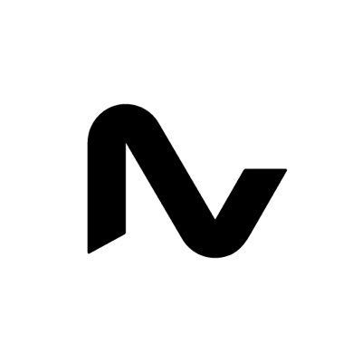

Experience
Professional Journey
/// PROFESSIONAL EXPERIENCE
7 ROLES // ROBOTICS + AUTOMOTIVE + MARINE
CAREER JOURNEY
2027
2026
2025
2024
2023
2022
2021
2020
2019
2018
2017
2016

Neura Robotics · Germany
Humanoid Development Engineer
Aug 2024 – Present
Leading humanoid robot development at Neura Robotics, focusing on
end-to-end mechanical design, actuation integration, and rapid prototyping
for the 4NE-1 humanoid platform. Driving hardware innovations from concept
through production-grade builds.
Mechatronics Engineer Intern
Feb – Aug 2024
Robotics QA & EoL Testing Engineer
Oct 2023 – Feb 2024
Designed and prototyped an 11-DOF humanoid hand for the 4NE-1 platform
Completed 3 rapid design iterations within 2-month sprint cycles for advanced hand mechanics
Optimized components for cost-to-performance, exceeding competitor functional specs at reduced production cost
"I count myself lucky to have had John Paul on my team. Beyond his undeniable skills in robotic prototyping, John brought an energy and a level of insight that fundamentally improved systems he was working on."

NavVis GmbH · Germany
Assembly & Calibration Technician
Aug 2022 – Sep 2023
Assembled and calibrated LiDAR scanning systems at NavVis in Munich —
my first role in Germany. Gained deep hands-on experience with precision
hardware assembly, optical alignment, and systematic quality verification
for industrial mobile mapping platforms.
Assembled and calibrated high-precision LiDAR scanners for the NavVis VLX platform
Performed End-of-Line validation ensuring all units met optical and mechanical tolerances
Collaborated with production engineering to optimize assembly workflows
"John possesses outstanding electronic skills that impressed me from his interview day. More than just his technical skills, he is a friendly and approachable colleague who adds positivity to any team."

Navidium India · India
Marine IoT Implementation Engineer
Nov 2019 – Nov 2021
Implemented IoT telemetry systems for marine vessels, enabling real-time
monitoring of engine performance, fuel consumption, and navigation data
across a fleet of commercial ships.
Deployed IoT sensor networks on 20+ commercial vessels for real-time data acquisition
Built dashboards for engine performance & fuel monitoring, reducing operational costs
Integrated GPS, engine sensors, and communication modules into unified telemetry architecture

Mercedes-Benz · Germany
Automotive Engineering Intern
Jul 2018
Automotive engineering internship at Mercedes-Benz, gaining exposure
to vehicle systems engineering, production processes, and quality
standards in one of the world's leading automotive manufacturers.
Supported vehicle systems engineering and production process optimization
Gained hands-on experience with automotive quality standards and testing

KELTRON · India
Electronics Engineering Intern
Jul 2016
Electronics engineering internship at KELTRON (Kerala State Electronics
Development Corporation), working on electronics manufacturing, PCB
assembly, and embedded system testing.
Assisted in PCB assembly and electronics manufacturing processes
Performed embedded system testing and quality verification